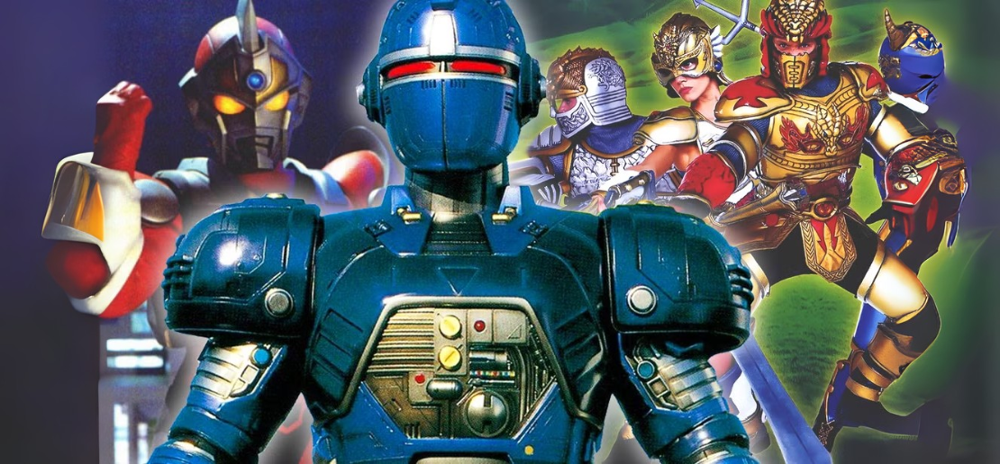
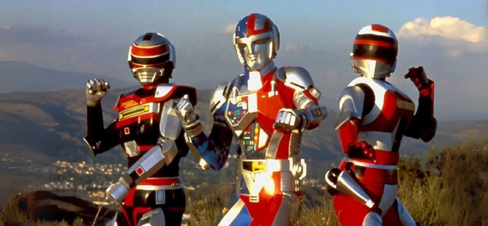
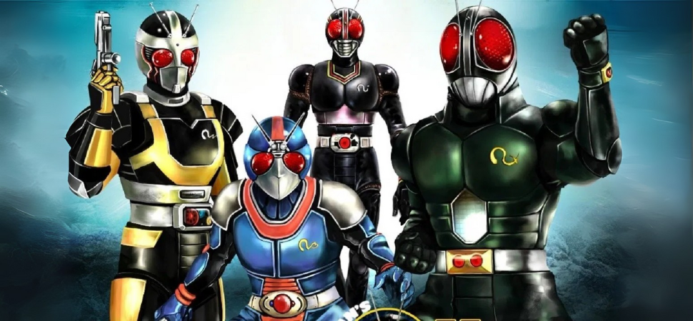
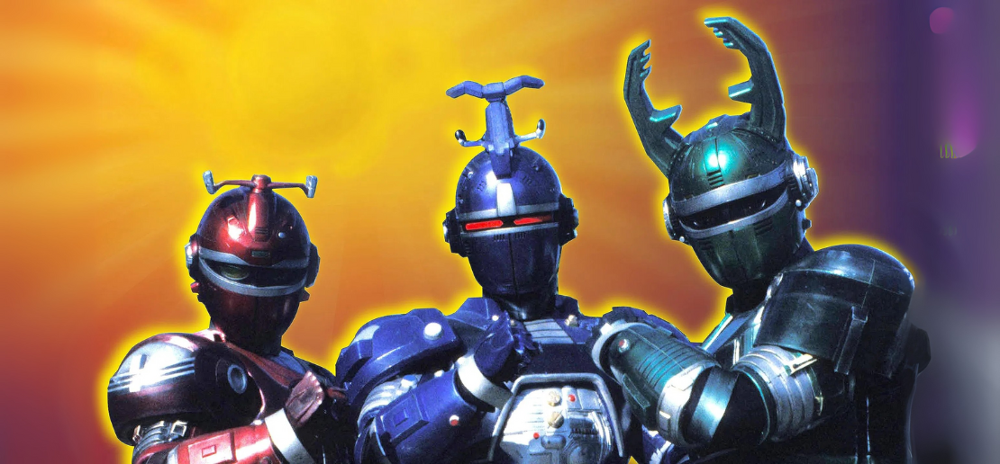
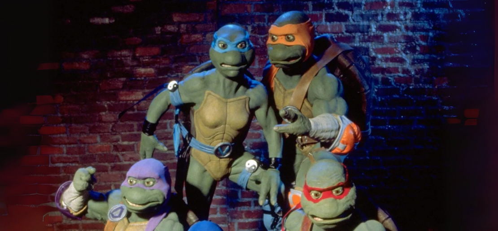
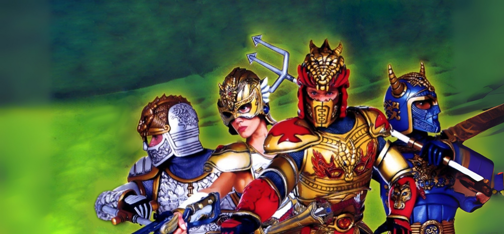
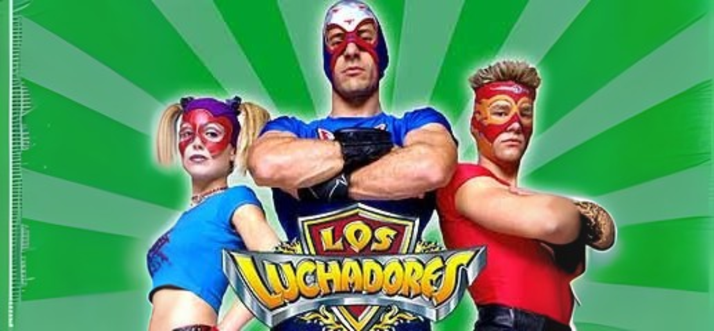

Other Super-Sentai Series Produced by Fox Kids!

When Mighty Morphin Power Rangers debuted in 1993, it was a cultural phenomenon—and Fox Kids knew it had struck gold. But success breeds ambition, and the network wasn’t content with just one tokusatsu-based hit.
Over the next several years, Fox Kids and Saban Entertainment attempted to replicate the Power Rangers formula with a variety of spandex-clad, monster-fighting shows. Some stuck. Most didn’t.
These shows borrowed heavily from Japanese tokusatsu franchises—just like Power Rangers—but each took a unique spin, often introducing new characters, fantasy worlds, or even comedic tones to reach young audiences.
Here’s a breakdown of every Power Rangers-inspired series that followed, the tokusatsu shows they were based on, and whether they found an audience—or ended up in the vault of forgotten ‘90s experiments.
VR Troopers (1994–1996)

Based on: Metalder, Spielban, and Shaider
Episodes: 92 episodes over 2 seasons
Was it a hit? Moderate initial success; fell short of Power Rangers's longevity
Notable Cast: Brad Hawkins (Ryan Steele), Michael Bacon (J.B. Reese), Sarah Brown (Kaitlin Star)
Before VR Troopers, there was Cybertron, a pilot starring Jason David Frank (Tommy from Power Rangers). Originally pitched as a solo spin-off, Cybertron was scrapped when Frank returned to Power Rangers, and Brad Hawkins was cast as the new lead.
VR Troopers fused footage from three unrelated Japanese Metal Hero shows, resulting in clever editing—but also limiting action scenes with all three heroes together. Despite strong marketing and decent ratings early on, the series couldn’t overcome its patchwork nature and was quietly cancelled after two seasons.
Masked Rider - (1995–1996)

Based on: Kamen Rider Black RX
Episodes: 40 episodes over 1 season
Was it a hit? No; critical and fan reception was poor
Notable Cast: T.J. Roberts (Dex / Masked Rider), Ted Jan Roberts (voice)
Masked Rider (1995–1996) was loosely spun off from a guest appearance in Mighty Morphin Power Rangers, attempting to bring the legendary Kamen Rider franchise to Western audiences. Based on Kamen Rider Black RX, the show starred T.J. Roberts as Dex, the titular hero, with Ted Jan Roberts providing the voice. Across its 40 episodes, the series struggled to balance superhero action with slapstick humor and a family sitcom vibe—complete with talking alien pets.
While the concept had promise, it strayed too far from the darker and more mature tone of its Japanese source material. Critics and longtime fans found the hybrid tone disjointed, and despite its Power Rangers pedigree, Masked Rider failed to find a lasting audience. It quietly ended after one season, remembered more for its odd tonal shifts than its impact.
Beetleborgs - (1996–1998)

Based on: Juukou B-Fighter and B-Fighter Kabuto
Episodes: 88 episodes over 2 seasons (Big Bad Beetleborgs and Beetleborgs Metallix)
Was it a hit? Moderately; it built a solid fanbase but faded by season two
Notable Cast: Wesley Barker (Drew), Herbie Baez (Roland), Brittany Konarzewski / Shannon Chandler (Jo)
Marketed with a heavy dose of comedy and monster-of-the-week hijinks, Beetleborgs found surprising success with younger audiences. The haunted house full of Universal Monsters knock-offs like Flabber the Elvis-ghost was a unique twist.
However, the show’s reliance on limited Japanese footage and the departure of original cast members led to its premature end—despite strong merchandising and high ratings in its first season.
Ninja Turtles: The Next Mutation - (1997–1998)

Based on: Original Saban production inspired by TMNT and tokusatsu-style action
Episodes: 26 episodes
Was it a hit? No; widely panned
Notable Cast: Jarred Blancard (Leonardo), Nicole Parker (Venus de Milo)
Perhaps the most infamous of the Fox Kids live-action experiments, The Next Mutation introduced a fifth Turtle: Venus de Milo.
Critics and fans alike rejected the series’ odd tone, poor fight choreography, and deviation from TMNT lore. Despite the franchise’s popularity, the show was cancelled after one season, and Venus remains a controversial footnote in Ninja Turtles history.
The Mystic Knights of Tir Na Nog - (1998–1999)

Based on: Original Saban creation with Celtic mythology influences
Episodes: 50 episodes over 1 season
Was it a hit? Critically appreciated, but underperformed commercially
Notable Cast: Lochlann O’Mearáin (Rohan), Lisa Dwan (Deirdre), Justin Pierre (Ivar)
Hoping to distance itself from Japanese footage constraints, Saban produced its first fully original fantasy series with Mystic Knights.
Shot in Ireland, it focused on medieval mythology, elemental powers, and armor-clad heroes. While praised for its ambition and production values, the show didn’t capture the same spark as Power Rangers and was discontinued after its first season. However, it holds a fond place in the memories of '90s kids seeking fantasy over sci-fi.
Los Luchadores - (2001–2002)

Based on: Original live-action show with lucha libre superhero themes
Episodes: 26 episodes
Was it a hit? Cult classic; overlooked gem
Notable Cast: L. Dean Ifill (Lobo Fuerte), Anthony Metchie (Turquoise), Maximo Morrone (Laurent)
In one of the strangest experiments from Saban and Fox Kids, Los Luchadores followed a team of masked wrestlers fighting crime in a futuristic city.
It blended action, camp, and parody—think Batman ’66 meets Power Rangers with lucha libre flair. Though never a breakout success, its charm and uniqueness have earned it a niche fan following and recognition as one of Fox Kids’ last wild swings before the Disney takeover.
The Legacy of Fox’s Tokusatsu Spin-Offs
While none of these shows reached the iconic heights of Power Rangers, they represent a time when networks weren’t afraid to take chances.
Fox Kids and Saban tried everything—from medieval fantasy to lucha heroes—to keep the momentum going. Some flopped. Others became late-night rerun legends. But all of them defined an era of bold experimentation in kids’ television.
← Volver a artículos